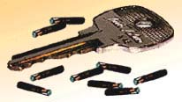
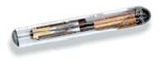
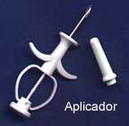
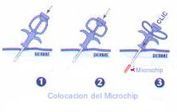

|
EL MICROCHIP:
IDENTIFICACIÓN ELECTRÓNICA
Todas las tortugas comprendidas
en el Anexo I de CITES y Apartado A de la normativa de la CEE,
en España deben de estar identificadas electrónicamente,
mediante la implantación de un microchip. Debido a su pequeño
tamaño y la imposibilidad de insertar los microchips
homologados, el SOIVRE acepta que la Testudo Kleinmanni sea
identificada mediante fotografías

A las crías de estos animales, se les expedirá un certificado
CITES provisional, a la espera de que tengan un tamaño
adecuado, para serle insertado el microchip. La inobservancia
de este punto puede hacer que nos sea retirada su
documentación y consecuentemente el animal, al estar
indocumentado.
Independientemente de la obligatoriedad legal de identificar a
los animales, el hecho de que un animal lleve insertado un
microchip nos permite una identificación fehaciente ante
cualquier contingencia. En caso de robo es un medio de
demostrar su identificación y propiedad. Por ello, como medida
de seguridad, es conveniente identificar, no solo a las
tortugas a las que nos obliga la ley, sino a todos los
ejemplares de nuestra colección.
Pero ¿qué es un microchip?

El microchip es un pequeño circuito electrónico encapsulado.
De un diámetro que permite su paso a través de una aguja
hipodérmica, para ser implantado subcutáneamente en los
animales.
El sistema electrónico se compone de tres partes:
• La memoria, que permite almacenar un código de hasta 16
cifras. Si combinamos estos 16 números, nos dan una
posibilidad de 30 trillones de combinaciones. Lo que significa
que cada microchip es único y no hay posibilidad de
duplicidad. Por consiguiente, cada uno de los animales que
porta un microchip en su organismo será único y perfectamente
diferenciado de los demás.
• Un condensador, que transforma el campo electromagnético que
genera el lector, en electricidad que activa el emisor del
chip.
• Una bobina que hace la función de antena
El microchip no posee ninguna fuente de energía

Los microchips se encuentran recubiertos por un cristal
biocompatible, que además lleva una delgada capa de 50
micrones de un polímero biológico inerte (que es el que
realiza la función antimigratoria), que hace que no exista
rechazo por parte del organismo, facilitando la fijación al
tejido. Al ser inyectado bajo la piel, es reconocido por el
organismo, que forma una delgada capa de proteína, que lo fija
en el sitio de implantación, evitando de esta manera su
desplazamiento o migración una vez dentro de la piel.
La implantación del microchip se realiza mediante un aplicador.
El microchip esta alojado en la aguja y presionando el embolo
se introduce subcutáneamente. Esta operación es un acto
veterinario que no necesita anestesia y el lugar de inserción
esta ya definido según las especies.
En la mayoría de los animales no es necesario poner nada en la
herida, aunque se puede dar el caso de que en alguna tortuga,
si es muy pequeña, sea necesario "pegar" los labios de la
herida con un pegamento cianolitico quirúrgico.

La lectura del código se realiza mediante un lector, el
funcionamiento del mismo es el siguiente; el lector emite unas
ondas electromagnéticas de baja intensidad, que son recogidas
por la bobina. El condensador las transforma en el
electricidad, que hace que el aparato emita una señal con su
código. Señal que, recogida por el lector, es mostrada en la
pantalla del mismo como una serie de números.
| 7 |
2 |
4 |
2 |
2 |
9 |
6 |
0 |
0 |
0 |
1 |
0 |
0 |
6 |
7 |

De los cuales los tres primeros corresponden al país (a España
le corresponde el 724), los dos siguiente corresponden a la
categoría de la especie (22 para las tortugas), los dos
siguientes corresponden al fabricante y los restantes son los
que componen la identificación del animal.
Cada animal es registrado con un código único y se deben de
seguir unas normas en su colocación, previo a la inserción del
microchip se comprobara con el lector que el animal no tiene
implantado ningún microchip. Acto seguido se comprobara con el
lector que el chip que se va a insertar corresponde al numero
que viene en la caja del chip y finalmente, una vez
implantado, se comprobara su ubicación y correcto
funcionamiento con el lector.
|